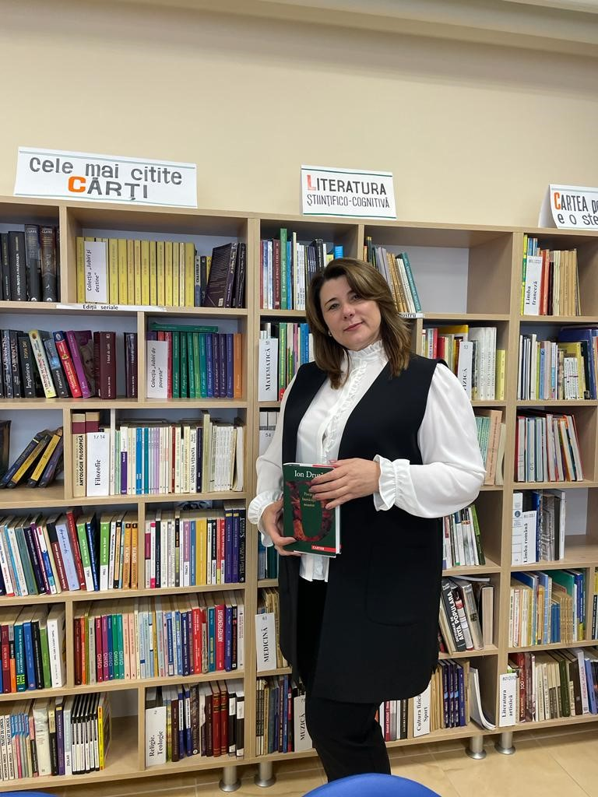
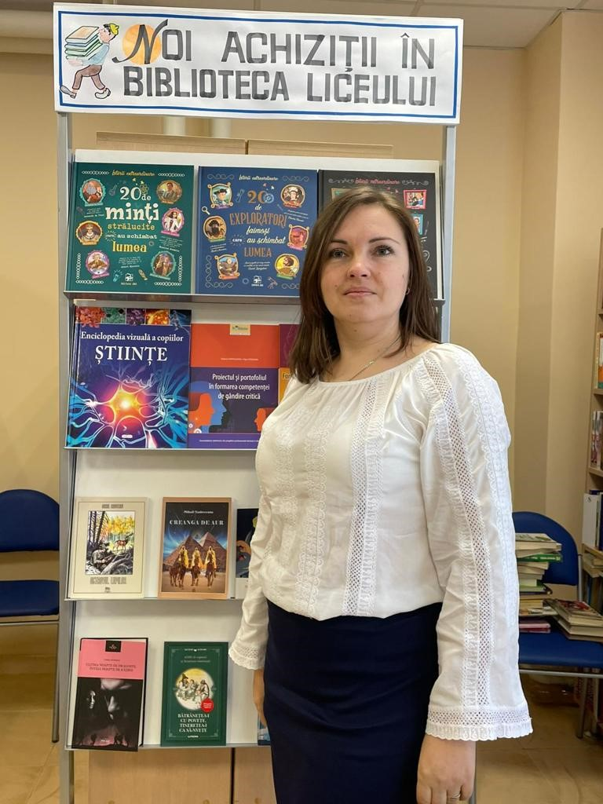
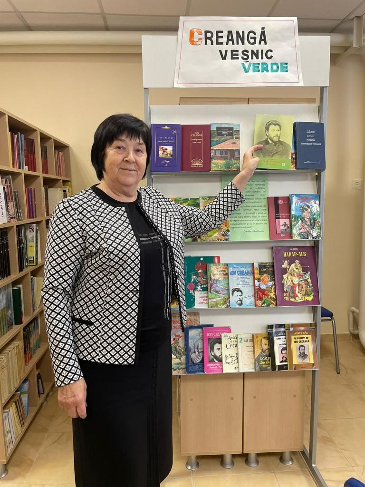
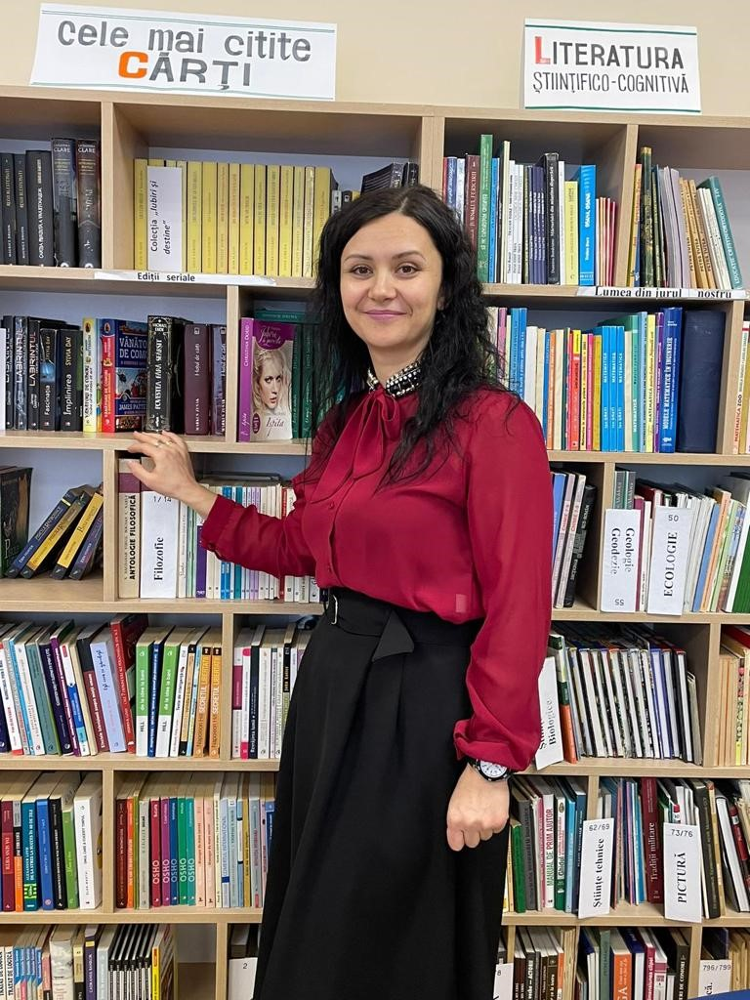
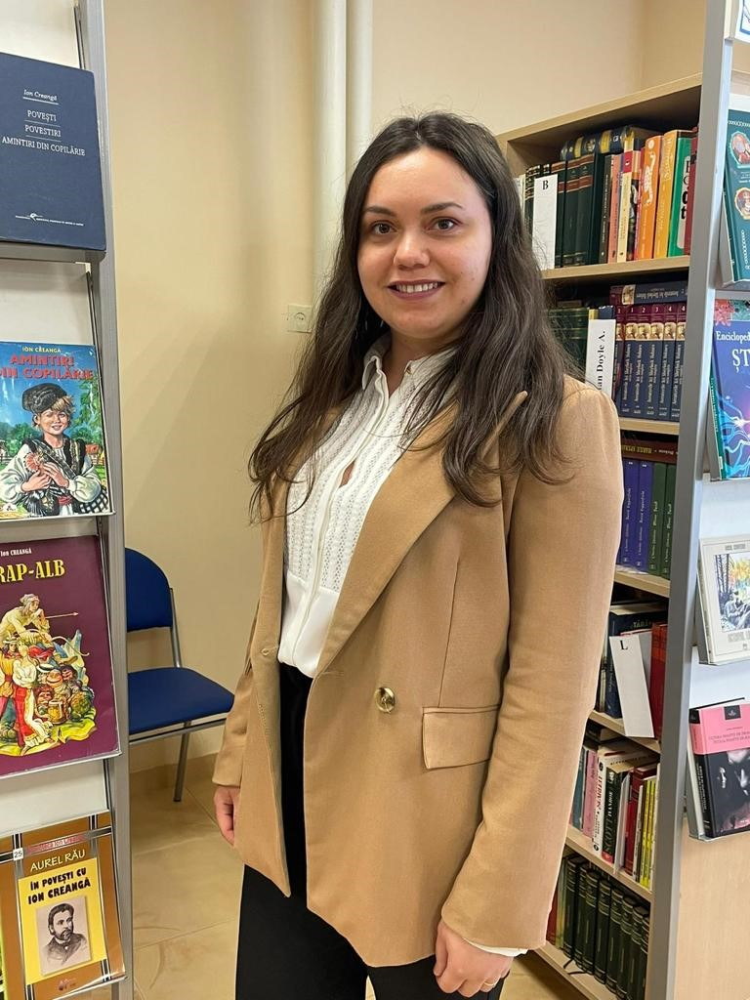
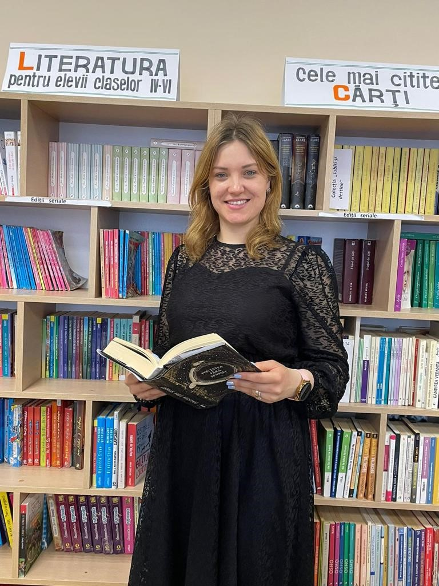
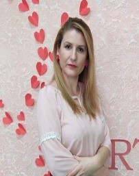

✕
Șef comisiei metodice: Ungureanu Ana.
Secretarul comisiei metodice: Levco Ecaterina.
| Nr.crt. | Numele, prenumele cadrului didactic | Disciplina de studiu | Gradul didactic | Stagiul pedagogic |
| 1. | Ungureanu Ana  |
Limba și literatura română/Limba franceză | I |
23 |
| 2 | Chiruță Tatiana  | Limba și literatura română | I |
30 |
| 3 | Midoni Valeria  | Limba și literatura română | I |
11 |
| 4 | Butnaru Maria  | Limba și literatura română | II |
51 |
| 5 | Levco Ecaterina  | Limba și literatura română/ Limba franceză |
II |
10 |
| 6 | Postolnițchi Maria  | Limba și literatura română | II |
4 |
| 7 | IonașTatiana  | Limba și literatura română | -- |
4 |
| 8 | Herța Victoria  | Limba și literatura română | -- |
-- |